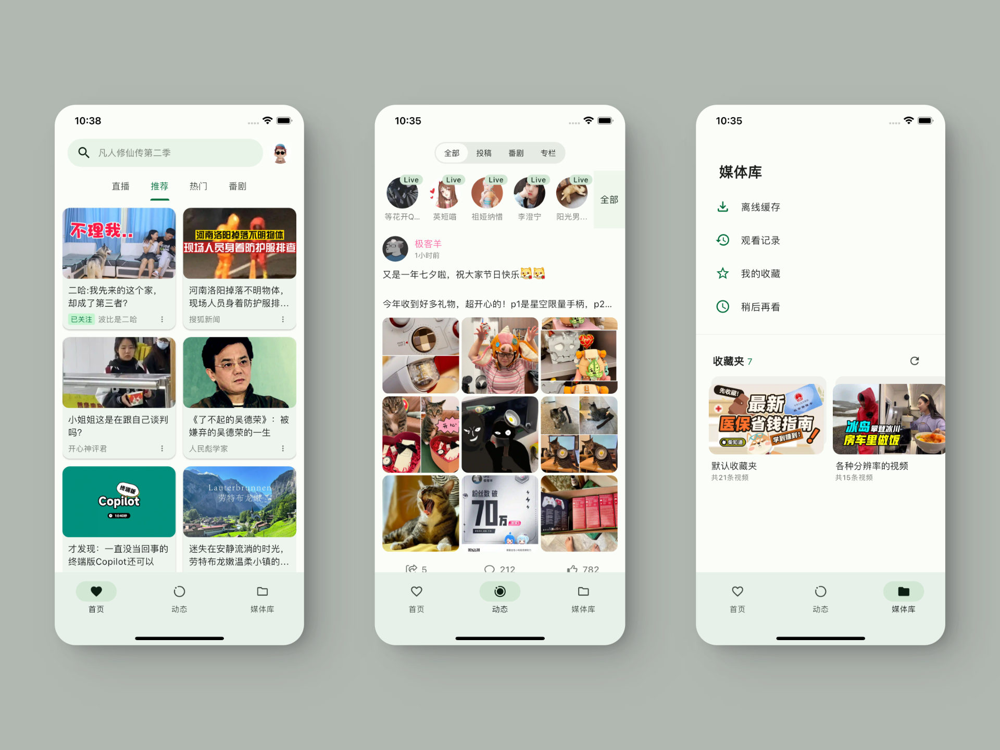

PiliPlus 挖宝：五个官方没明说但超好用的隐藏设置
装了 PiliPlus 就只是刷视频？藏在设置深处的几个冷门开关能把你的 B 站体验拉满——从高帧率到省流组合，从播放预设到备份恢复，一个个挖。
你以为 PiliPlus 就是个第三方 B 站客户端，装完打开看视频就行？其实它藏着不少"翻到菜单第三层才见得到"的东西——我把设置菜单翻了个底朝天，挑出五个真有用的，给还在瞎折腾的人省点时间。它的官网上也列了功能清单，但那些埋得深的开关就没写进去了。

一、不锁 60 帧：高刷屏用户必开的开关
第一个藏得真的深。大多数 App 在 Android 上默认锁 60 帧，PiliPlus 偏不——它能跑满你设备的 90Hz、120Hz 甚至更高。滑动信息流跟手度完全不一样，弹幕滚动也从"一格一格跳"变成丝滑流动。
在哪？进设置找「显示」或「画面」相关的分组，里面有个刷新率控制的选项，把它切到「跟随系统」或「不限制」就行。老机型担心功耗的话可以维持默认，旗舰机别犹豫，开了就再也回不去 60 帧了。
二、播放预设：一次配置终身受益的懒人福音
每次打开视频都手动切 1080P、按全屏、调画质——累不累？PiliPlus 允许你把这些偏好设成默认值，之后所有新打开的视频自动按你的习惯来。
能预设的项比你想的多：画质档位（高码率 1080P 优先，没有就自动回退）、音质偏好（高码率音频 or 标准）、解码格式（AVC/HEVC 偏好）、硬件加速开关、进入播放页是否自动全屏、全屏方向是跟随视频还是锁定横屏。
我个人配了两套组合：Wi-Fi 环境拉满画质加自动全屏，通勤流量党则锁 720P 关掉自动播放。预设只对新打开的视频生效，已经手动调过的不会被覆盖——细节做得还挺贴心。想深挖所有预设参数的可以翻翻PiliPlus 文档。
三、登录不用输密码：Cookie 登录是个什么鬼
从官方下载拿到 APK 包装好之后，PiliPlus 给了四种登录方式，大家都用扫码或密码，Cookie 登录几乎没人碰——可它其实是个超实用的备用方案。想象一下：B 站官方 App 崩了、你没带手机在身边、或者扫码死活扫不上的时候，Cookie 登录能救场。
原理很简单：从你已经登录 B 站的浏览器里复制一段凭证贴进来就行。操作路径是浏览器开发者工具里找 Cookie 相关字段，复制粘贴。官方对这个功能提得很少，属于"知道的人不算多"的那一类。普通用户老老实实扫码就行，在意安全的记住凭证只保存在本机。
四、图片质量与省流组合：流量党专属隐藏开关
刷信息流的时候，封面图的加载质量其实能调。默认是高清，Wi-Fi 下无所谓，但用移动流量刷的话，把列表封面质量降到「低清」或「自动」，流量消耗能砍一大半。
这个设置也藏在显示分组里，和字体大小、高刷新率在一起。配合播放器里的省流选项关自动播放、降默认画质，整套组合下来刷一天 B 站流量都不怎么跳。官方没把它当成主打功能，但对每个月流量捉襟见肘的人来说，这是刚需。

五、WebDAV 备份：大版本升级前一定要做的事
最后一个，也是我踩过坑之后才记住的——PiliPlus 支持把整套设置、收藏、播放记录通过 WebDAV 备份到云端。为什么？因为 APK 覆盖安装虽然不丢数据，但大版本升级偶尔会出现设置错乱的情况。先备份，出了问题一键恢复，比手动一项项重设省心多了。
备份入口在账号与数据相关的设置分组里，填一下你自己的 WebDAV 地址和账号密码就能用。没有 WebDAV 服务的话，坚果云、阿里云盘这类都支持，免费空间足够用了。文档里提了一句但没详细展开，属于"知道了就用上"的实用功能。
一个小提醒：预设只照顾新视频
最后说个容易踩的小坑：播放预设里的画质、解码这些设置，只对新打开的视频生效。你正在看的那个视频哪怕手动切了 720P，设成默认 1080P 也不会自动跳回去。逻辑是对的——尊重用户的手动选择——但第一次用的人容易误以为预设没生效。
把 PiliPlus 用透的感觉就是这样：很多东西放在那里你不用也不会出错，但发现了就再也离不开。这五个是我目前挖出来最值的，后面还在慢慢翻。项目的开源资料在 GitHub、Gitee 和 GitCode 三处都有备份，国内网络环境下哪个能用用哪个。